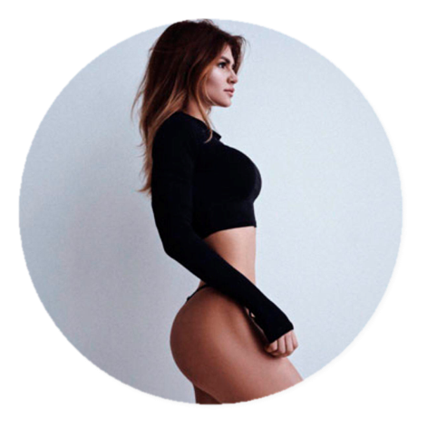
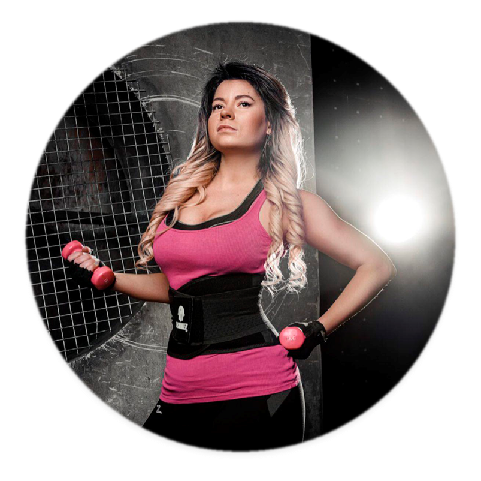

создатель курсов и главный куратор

диетолог и тренер-куратор
О проекте
Привет. Меня зовут Анастасия Миронова, приятно познакомиться.
Я автор онлайн-тренировок и создатель проектса «Школа совершенной физической формы»,
владелец студии групповых тренировок «Булочная у Мироновой» в Санкт-Петербурге и создатель дизайнерской
линии удобной спортивной и повседневной одежды для активного образа жизни IRONBYMIRONOVA (http://shop.mirofs.ru/)
История моих проектов началась с желания стать лучше и полюбить себя. После очередного отпуска с пиццей и сладостями, пришло осознание — нужно менять привычный образ жизни в пользу здорового.
Так я начала 2-х летний путь от увлечения к профессии: тренировалась дома и в зале, боролась с желанием опустить руки, пробовала различные системы питания и мотивировалась результатами . Параллельно делилась советами и мыслями с подписчиками в Instagram.
Идея запустить онлайн проект пришла в конце 2016 года: на тот момент я получала огромное количество писем от девушек с просьбами объяснить, как тренироваться и питаться правильно. Такой отклик из разных городов и стран не оставил сомнения в том, что я хочу помогать им добиваться своих целей.
Летом 2017 года, стартовал проект «Школа совершенной физической формы Анастасии Мироновой», в котором я с моей командой делюсь всеми своими знаниями в области тренировок и ухода, мой диетолог разрабатывает планы питания, отвечает на любые вопросы, мы поддерживаем участниц в трудную минуту и даем им заряд мотивации. Взамен мы получаем сотни положительных отзывов и фото, которые доказывают, что этот проект, в который я вложила частичку себя, нечто большее чем просто планы тренировок и питания – это образ жизни.
Подробнее
История моих проектов началась с желания стать лучше и полюбить себя. После очередного отпуска с пиццей и сладостями, пришло осознание — нужно менять привычный образ жизни в пользу здорового.
Так я начала 2-х летний путь от увлечения к профессии: тренировалась дома и в зале, боролась с желанием опустить руки, пробовала различные системы питания и мотивировалась результатами . Параллельно делилась советами и мыслями с подписчиками в Instagram.
Идея запустить онлайн проект пришла в конце 2016 года: на тот момент я получала огромное количество писем от девушек с просьбами объяснить, как тренироваться и питаться правильно. Такой отклик из разных городов и стран не оставил сомнения в том, что я хочу помогать им добиваться своих целей.
Летом 2017 года, стартовал проект «Школа совершенной физической формы Анастасии Мироновой», в котором я с моей командой делюсь всеми своими знаниями в области тренировок и ухода, мой диетолог разрабатывает планы питания, отвечает на любые вопросы, мы поддерживаем участниц в трудную минуту и даем им заряд мотивации. Взамен мы получаем сотни положительных отзывов и фото, которые доказывают, что этот проект, в который я вложила частичку себя, нечто большее чем просто планы тренировок и питания – это образ жизни.